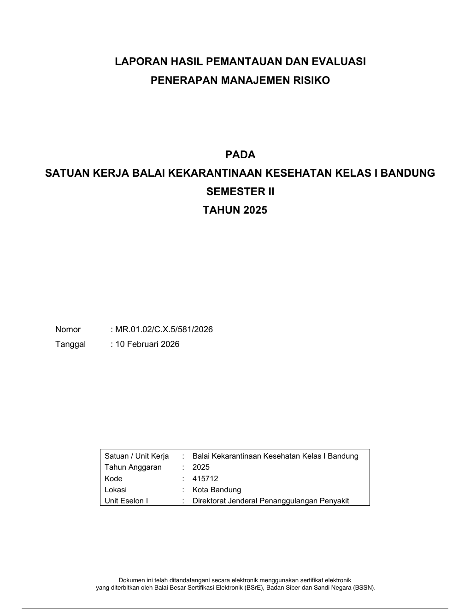
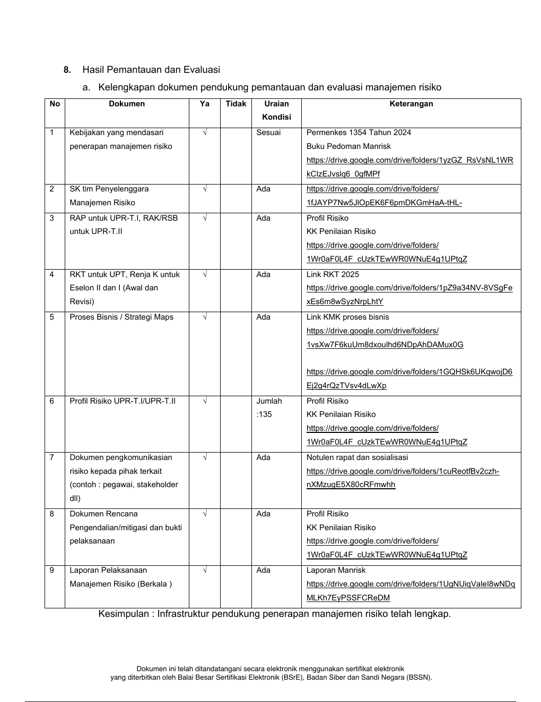
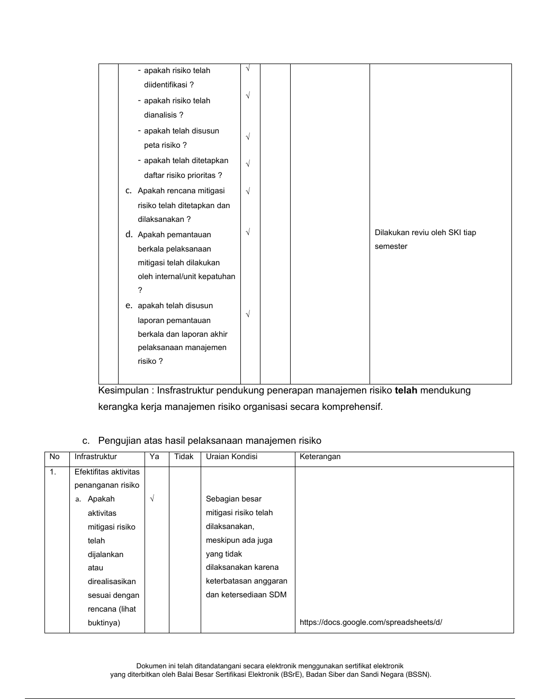
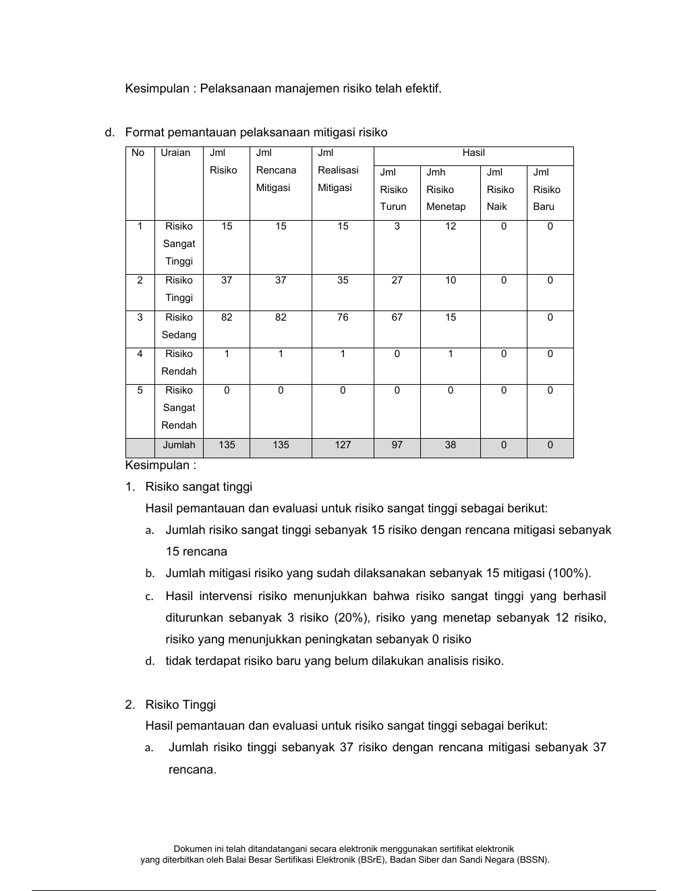
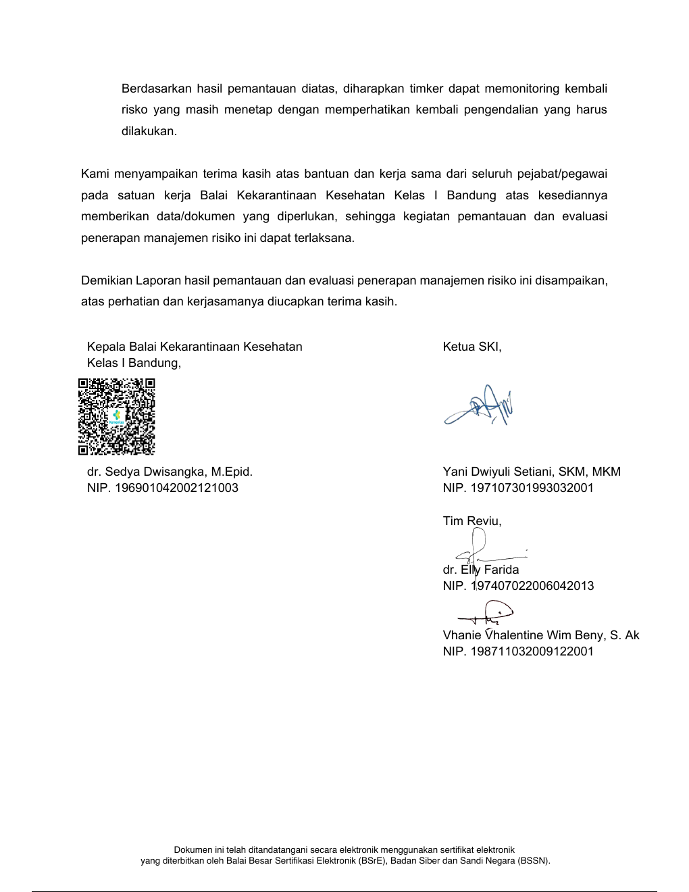

Cover resmi
Judul, unit kerja, semester/tahun, nomor, tanggal, kotak identitas unit, footer TTE elektronik.
Saya sudah ekstrak PDF 12 halaman, ukuran Letter portrait, font dominan Arial, footer BSrE di tiap halaman. Berikut bagian yang perlu direplikasi.





Klik bagian yang menurut Anda wajib ada. Kalau targetnya “persis attachment”, kemungkinan semua bagian di atas masuk scope.